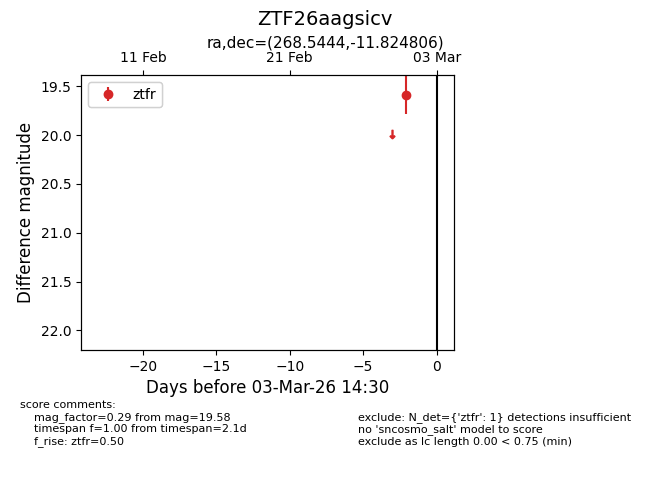
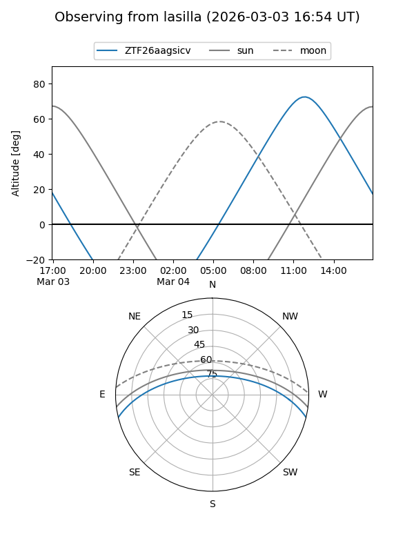
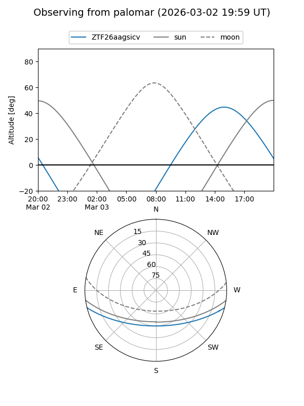

ZTF26aagsicv
Target ZTF26aagsicv at 2026-03-03 14:31
Aliases and brokers:
FINK: link
Lasair: link
ALeRCE: link
alt names
ZTF26aagsicv (ztf,fink_ztf)
Coordinates:
equatorial (ra, dec) = 268.5444,-11.82481
equatorial (HMS+DMS) = 17:54:10.65,-11:49:29.30
galactic (l, b) = (15.7787,+7.00429)
Flags:
Photometry:
last ztfr=19.58
1 ztfr detections
Lightcurve

Visibility


Additional plots